第五章、DSTP2xDemo 使用说明
1、软件系统环境
1.该 demo 支持系统 Windows/linux 系统，Windows 需要 XP 及以上的系统，其主要目的是模板编辑。
2.如需打印 PDF 可在 sdkcfg.xml 文件中配置，目前我们支持两种形式打印 PDF，内部逻辑处理 PDF 在 sdkcfg.xml 文件中设置为“0”，如需 PDF 插件则需先插件配置路径；
2、运行说明
Windows：
1.解压压缩包（版本会不断升级，具体名称以实际为准）；
2.解压后，选择进入 对应架构系统开发包 文件夹；
3.解压后，进入 bin\Win32 或 bin\x64 的文件夹；
4.最后双击运行 DSTP2xDemo.exe；
Linux：
1.解压压缩包（版本会不断升级，具体名称以实际为准）；
2.解压后，选择进入 对应架构系统开发包 文件夹；
3.解压后，进入 bin 文件夹；
4.空白处鼠标右键点击“打开终端”；
5.输入命令：sudo su 输入密码，切换到root用户，如权限不足输入chmod -R 777 * 再执行；
6.输入命令运行：./map.ds，用于给予权限运行基于SDK的程序来操控USB连接方式的打印机；
7.输入命令运行：./DSTP2xDemo.out；
3、DSTP2xDemo功能介绍
3.1、模板功能介绍
3.1.1、概览
启动界面如图 1.1 所示，启动界面有模版选择、模板编辑、模板参数输入设置、清除输出框输出信息、打印功能、实时返回打印机状态等。
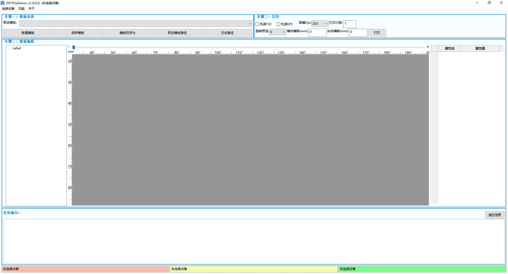
3.1.2、连接设备
左上方点击进入设备连接选择【枚举/连接打印机】，根据打印机实际仿真类型已经需要的连接方式进行连接；
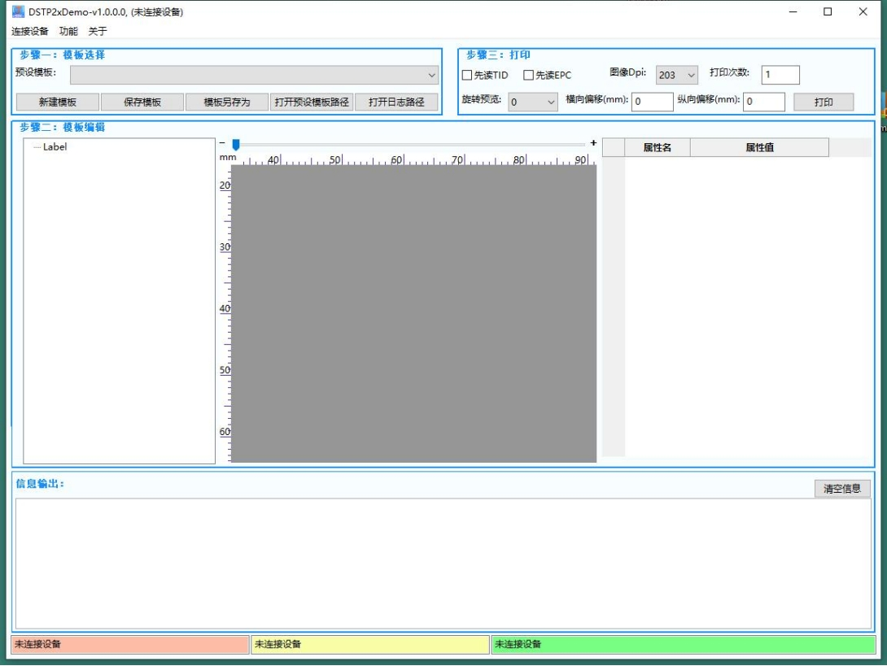
1.仿真选择：打印机所能识别打印语言，根据打印机设置选择对应仿真类型，目前已支持ZPL、TSPL、ESCPOS，可打印自检页确认当前机器仿真类型；
2.打印机连接方式：根据实际应用场景选择对应连接，目前支持USB枚举、网口同网段枚举、IP直连、串口直连；
3.1.3、选择预设模板或者自行编辑新模板
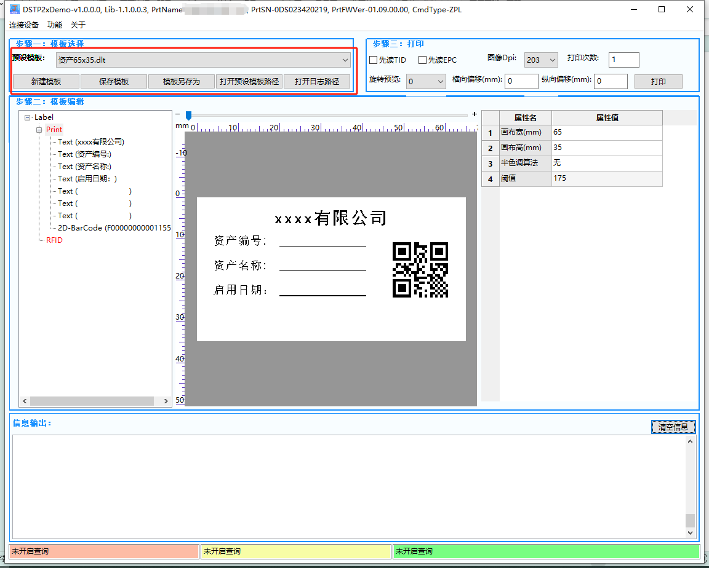
1.预设模板：默认路径下预编辑的模板，选择后看查看相关参数属性；
2.新建模板：新建一个空白模板，根据实际打印需求添加元素进行编辑；
3.保存模板：保存正在编辑的模板；
4.模板另存为：保存正在编辑的模板到指定目录；
5.打开预设模板路径：打印demo默认存放模板内目录；
6.打开日志路径：打开调用接口日志，以便分析，一般默认路径为：C:\Users\用户名\AppData\Local\Temp\DSSDKTemp\ThermalLog
3.1.4、按实际需要编辑打印及RFID内容
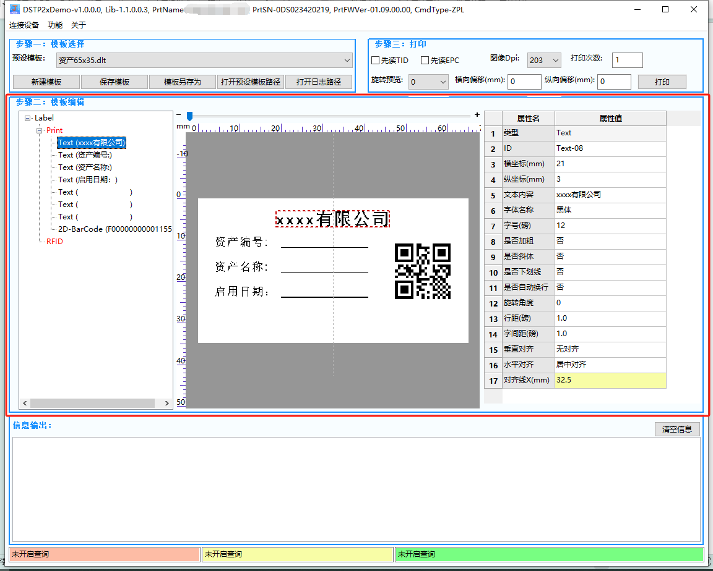
1.左侧Lebel树状图：显示当前模板内所有打印元素以及RFID数据编辑；
2.中间部分为模板预览图，编辑参数后需要点击回车或点到其他参数后才能刷新预览；
3.右侧为具体元素的参数属性设置，根据实际打印进行编辑；
3.1.5、编辑模板后选择打印循环次数点击进行打印
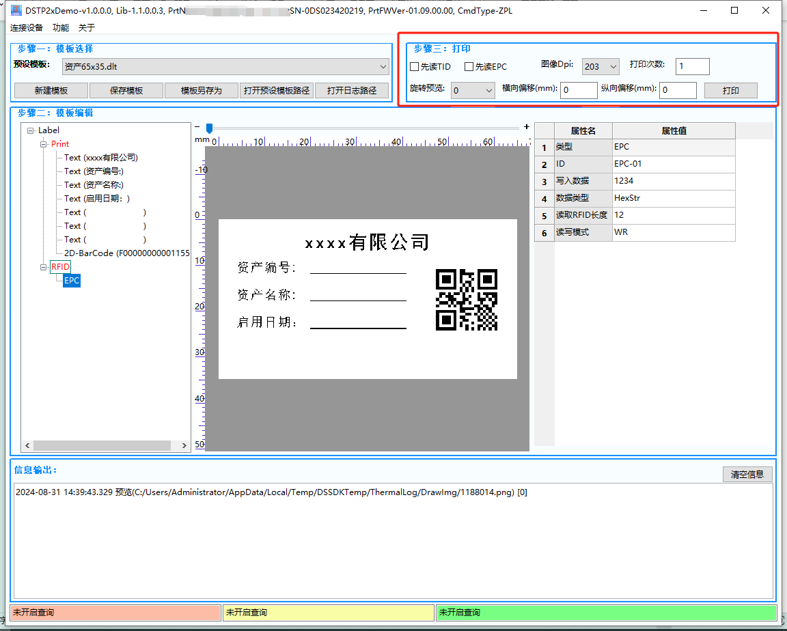
1.先读TID/EPC：勾选后先返回相应数据再执行打印(暂不支持两个同时勾选返回)；
2.图像DPI：设置为实际打印机印头DPI（目前机器有203dpi、300dpi.600dpi）转换为对应打印尺寸；
3.2、其他功能介绍
其他功能界面如图1.2所示，普通常用的获取功能、RFID功能、PDF打印、以及数据直传功能等。 所有操作均需要连接设备后执行
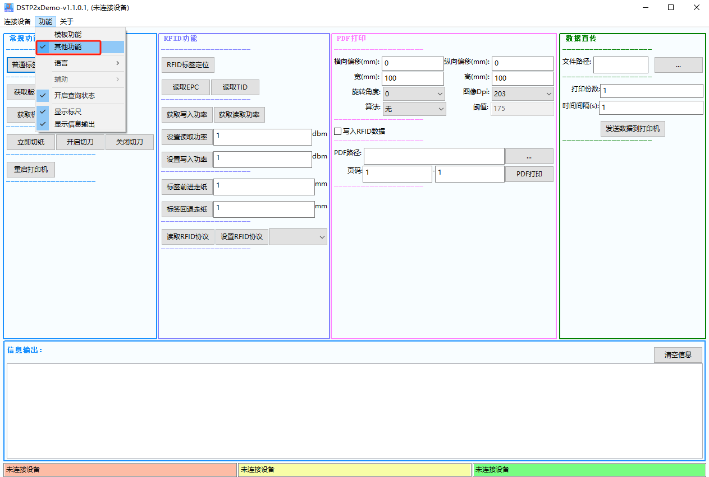
(1)常用功能
1.普通定位标签：定位校验普通标签或黑标纸；
2.打印自检页：点击后打印打印机自检页信息；
3.清除打印机缓存：点击后清除打印机缓存，无需重启恢复无数据状态；
4.获取版本号：获取当前连接机器的固件版本信息；
5.获取厂商机型：获取当前连接机器的厂商机型信息；
6.获取机号：获取当前连接机器的机号信息；
7.立即切纸：用于控制机器切纸模板，操作后立即执行切纸动作；（需机器安装切刀模块）；
8.开启切刀：开启打印机切刀功能；
9.关闭切刀：关闭打印机切刀功能；
(2)RFID功能
1.RFID标签：定位校验RFID标签【机器会缓慢走纸，耐心等待定位完成】；
2.读取EPC：直接读取当前标签EPC数据；
3.读取TID：直接读取当前标签TID数据；
4.获取写入功率：获取当前连接机器的写入功率；
5.获取读取功率：获取当前连接机器的读取功率；
6.设置写入功率：手动设置当前连接机器的写入功率【定位校验时会自动检验最为合适的数值，非必要无需修改】；
7.设置读取功率：手动设置当前连接机器的读取功率【定位校验时会自动检验最为合适的数值，非必要无需修改】；
(3)PDF打印
1.打印偏移位置、宽高、旋转角度为根据实际打印尺寸输入数值；
2.写入RFID数据：如需要写入数据打印勾选后显示数据输入框，输入需要写入的数据；
3.选择PDF文件，输入打印页码进行打印；
如需打印PDF可在sdkcfg.xml文件中配置，目前支持两种形式打印PDF，内部逻辑处理PDF在sdkcfg.xml文件中设置为“0”，如需PDF插件则需先插件配置路径；
(4)数据直传
1.用于直接传数据文件进行打印；
4、DSTP2xDemo使用流程
4.1、打开模板
双击运行打开“DSTP2xDemo.exe”,点击左上角下拉框选择模板
预设模板（dlt文件）路径：DSTP2xDemo.exe根目录下的./Template文件夹；
如果需要打开自定义路径下的模板文件，可以选择“打开更多模板”进行选择。
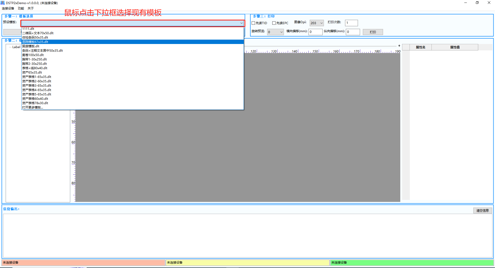
选中现有模板，demo会刷新出模板对应的预览图。
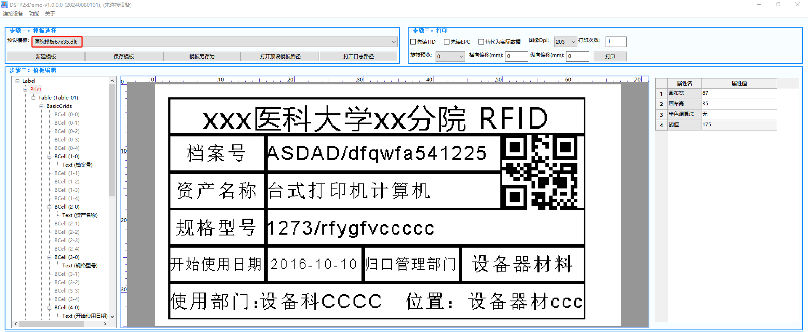
4.2、新建标签
4.2.1、创建模板
在demo界面中，点击“新建模板”
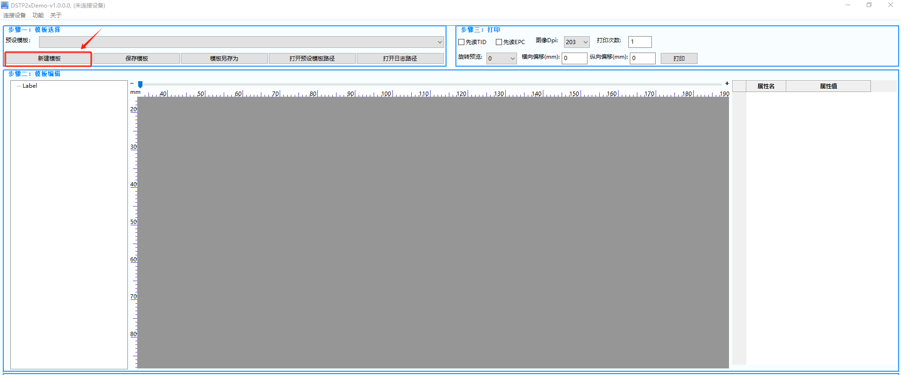
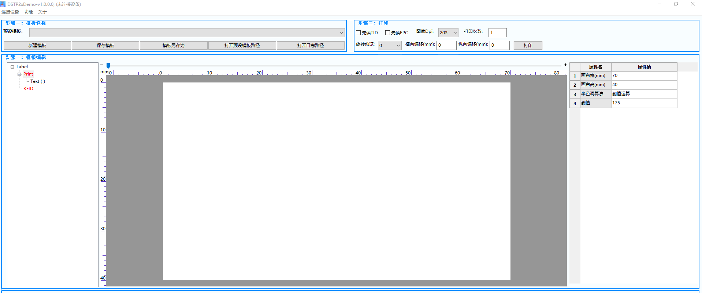
修改标签属性
步骤：点击左侧树状图“print”->demo右侧显示标签元素属性栏->修改对应画布宽高参数->按enter键或点击右侧任意空白处便可修改成功->查看预览图刷新后的效果。（如果预览图没变化，则需要检查一下是否修改成功。）
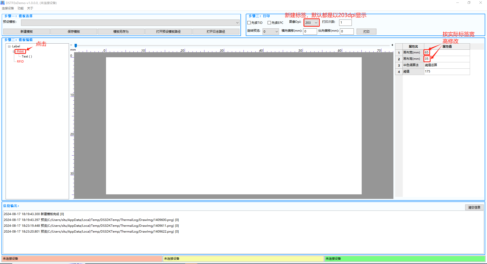
如标签类型是带侧边距的标签，如下图：该标签侧边距9mm不纳入画布宽计算，新建模板标签宽高设置为50*50mm即可。
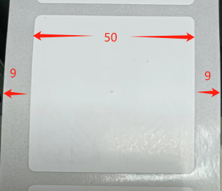
带侧边距的标签，如果左侧内容打印不全，则根据侧边距对应调整一下横向偏移参数，如下图：
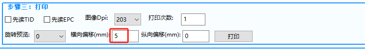
注：
①目前新建模板默认都是203dpi，如需要切换其它dpi预览打印，需要先连接打印机再进行切换dpi。
②默认换算单位都为mm。
4.2.2、添加文本
鼠标右键点击“print”->点击“添加文本”
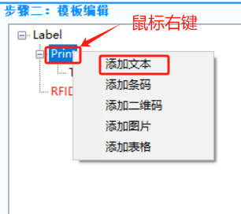
修改文本属性参数
默认文本内容为“ ”，在右侧文本属性栏中可以设置坐标、字体、大小、内容、自动换行、字间距和其它效果等等。
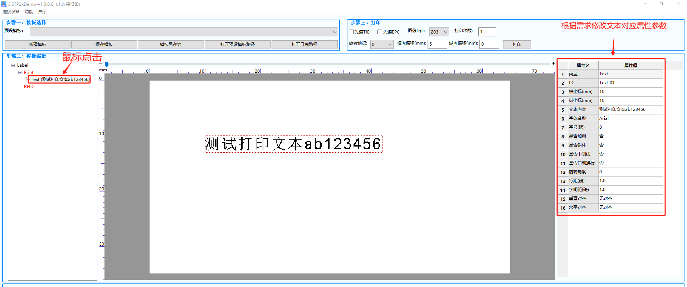
文本自动换行
修改自动换行属性参数-选“是”,输入一行显示的宽度，当文本内容数据超过给定的宽度，便会自动换到下一行显示。
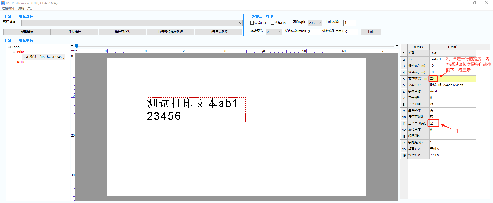
以宋体打印一个中文字体为示例，字号大小如下图：
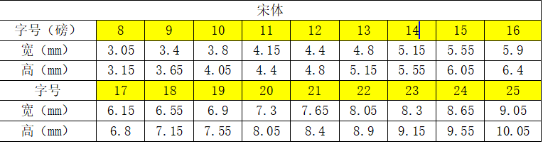
综上，字号增大一号，宽度增加0.25-0.4mm；高度增加0.25-0.5mm。
4.2.3、添加条码
鼠标右键点击“print”->点击“添加条码”
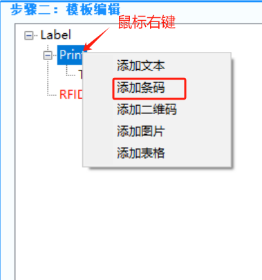
修改条码属性参数
默认条码类型为 Code 128 码，条码内容为“1234”，在右侧条形码栏属性中，可以修改条形码的内容、宽高、类型、是否显示注释、旋转角度等等。
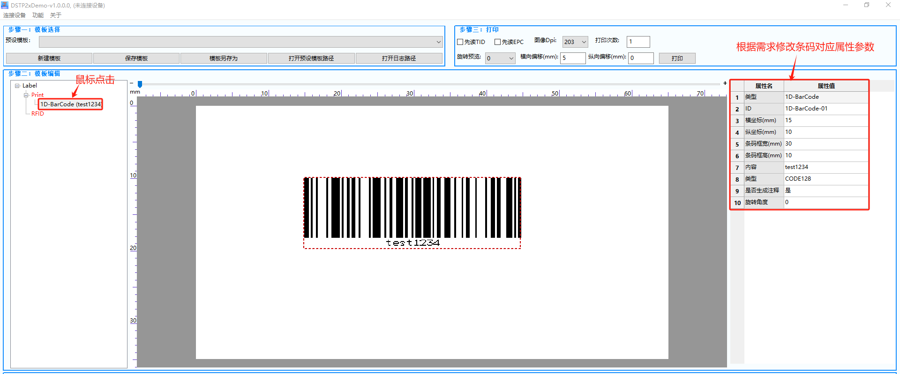
4.2.4、添加二维码
鼠标右键点击“print”->点击“添加二维码”
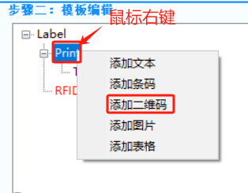
修改条码属性参数
默认二维码类型为 QRCode，二维码内容为“1234”，在右侧二维码属性栏中，可以修改二维码码的内容、宽高、类型、容错等级、旋转角度等等。容错等级分为四个等级，分别对应容错率分别为：L-7%、M-15%、Q-25%、H-30%。
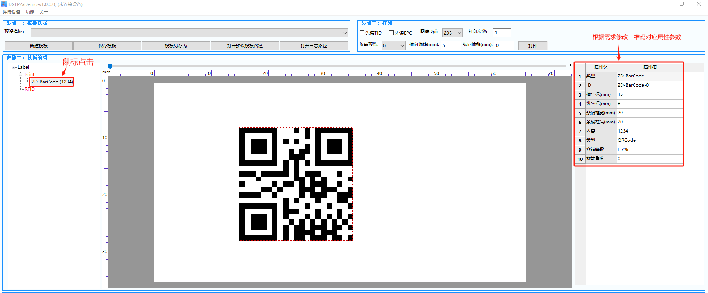
4.2.5、添加图片
鼠标右键点击“print”->点击“添加图片”
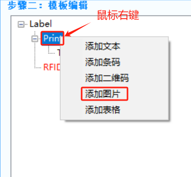
图片可以选择本地图片和base64图片数据（txt格式）两种方式。文件后缀选“base64 TXT file”会显示所有图片和txt文件。
选择本地图片导入，步骤如下：
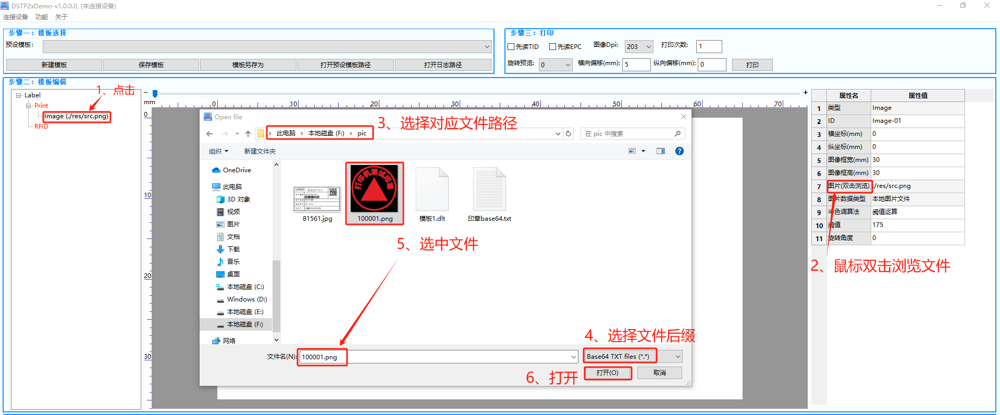
选择本地图片（png、jpg和bmp以外格式）或base64图片数据导入， 步骤如下：
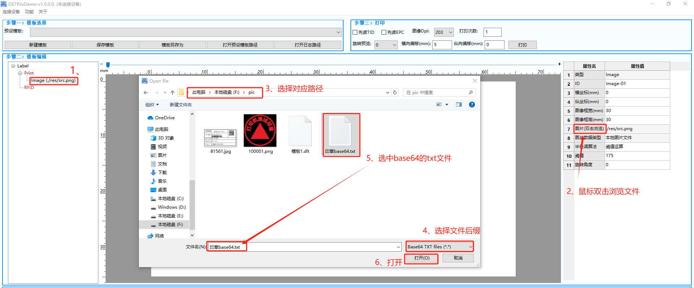
修改图片属性参数
导入图片后，在右侧图片属性栏中，可以修改图片的坐标、宽高、算法、旋转角度等等。
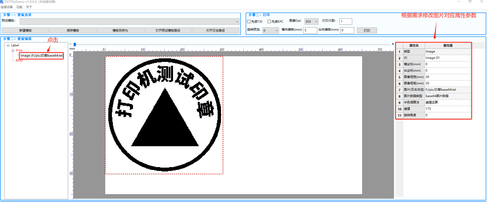
4.2.6、添加表格
鼠标右键点击“print”->点击“添加表格”
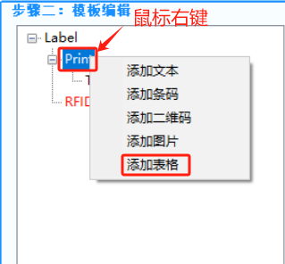
修改表格属性参数
默认表格为1行1列，在右侧表格属性栏中，可以修改表格的坐标、宽高、行列数、行列边界线位置等等。
左侧树状导航栏中，每个Bcell对应一个单元格。每个单元格的初始宽高，都是根据表格总宽高和行列数进行平均划分。
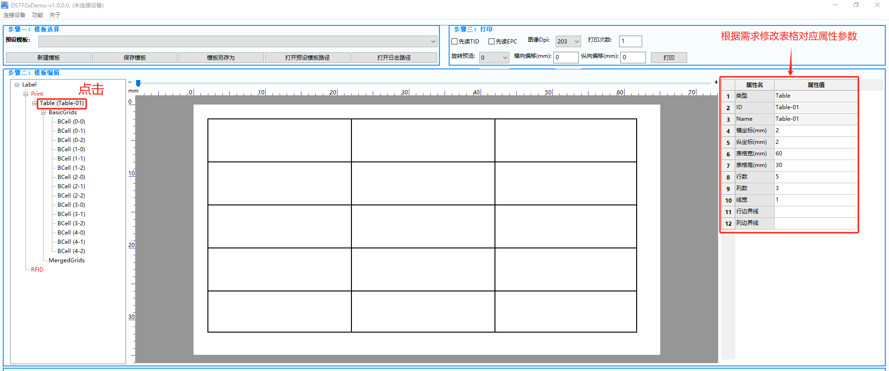
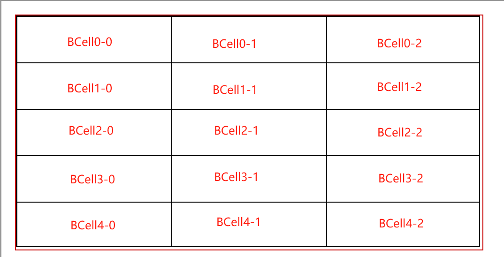
调整表格行高
可以通过调整行边界线来对应调整行高。
行边界线：表格中，每一条横线定义为行边界线，从表格最顶端横线往下数：行边界线0、行边界线1、行边界线2····，表格y坐标限制了行边界线0，因此，行边界线调整只能从行边界线1开始调整。
调整行高：通过行边界线调整行高，某一行行高减小表格会整体往上移，增大表格会整体往下移；
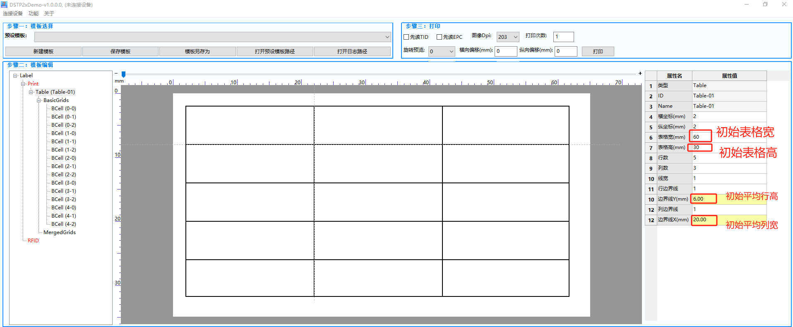
行边界线增大2mm，整个表格高度整体增加2mm，表格整体下移。
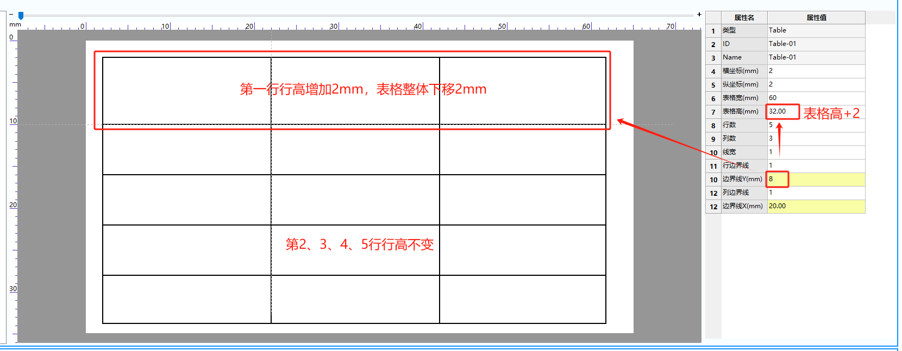
调整表格列宽
可以通过调整列边界线来对应调整列宽。
列边界线：表格中，每一条竖线定义为列边界线，从表格最左侧竖线往右数：列边界线0、列边界线1、列边界线2····，表格x坐标限制了列边界线0，因此，列边界线调整只能从列边界线1开始调整。
调整列宽：通过调整某一列边界线，该列边界线相邻两个格子列宽呈现此消彼长的关系。例如：5行3列的表格，调整列边界1增大5mm，那么第一列列宽增加5mm，第二列列宽就会对应减少5mm，第3列列宽不变；如果调整该表格最右边的列边界线3，那么只会影响第3列列宽，列边界线3增大，表格往右延伸，如果列边界线3减小，表格往左缩小。
调整列边界线1，表格列宽变化如下图：
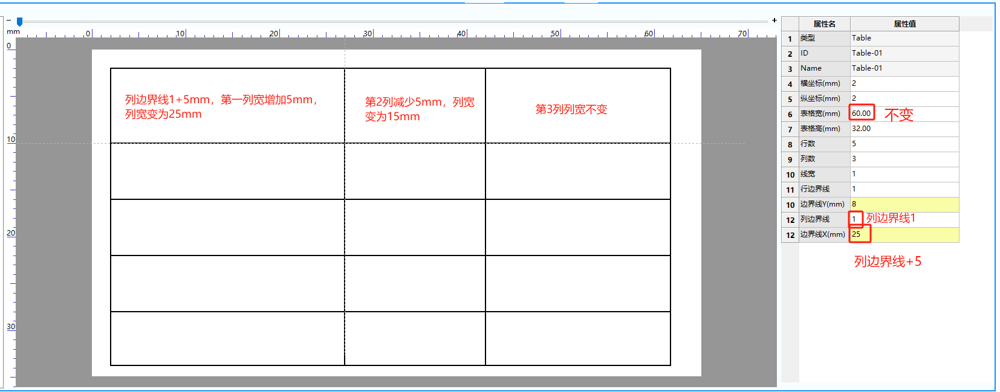
调整列边界线3，表格变化如下图：
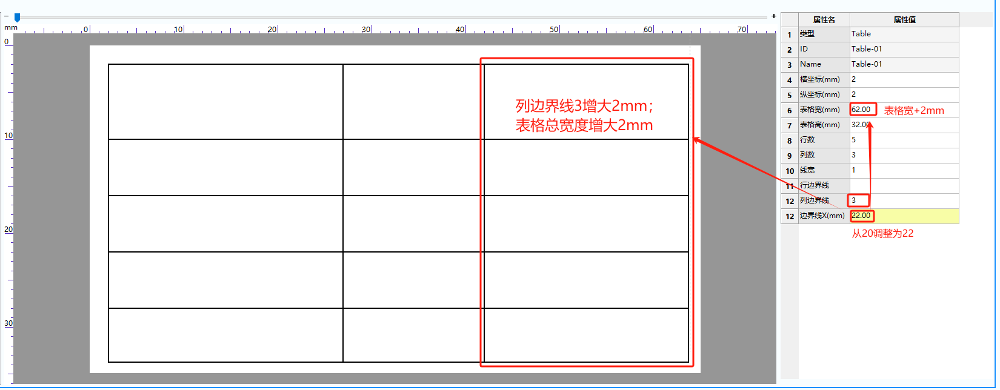
合并单元格
按住Ctrl键，鼠标点击选中要合并的单元格，鼠标右键-合并单元格。相邻几个BCell单元格合并后，会生成一个新的单元格MCell。
注：一定要相邻的单元格才能进行合并。
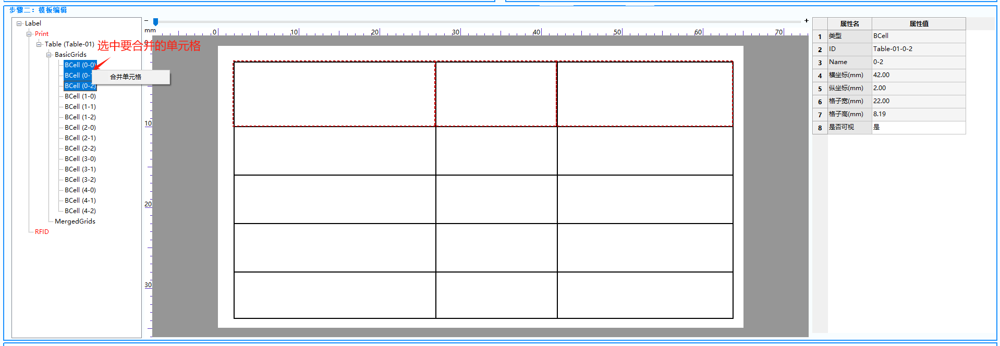
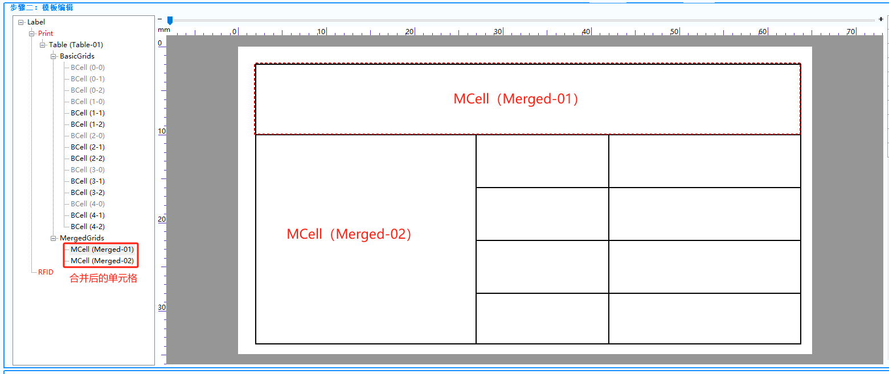
取消合并单元格
合并后想还原，可以鼠标右键选中对应的MCell单元格，点击取消合并单元格，便可还原如初。
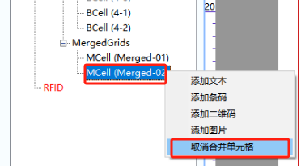
表格添加文本
鼠标右键选中某个单元格（BCell/MCell）->添加文本
在表格中添加文本，初始坐标为单元格左上角，文本框宽高为该单元格的宽高，选中垂直、水平对齐方式，会进行自动计算，效果如下图：
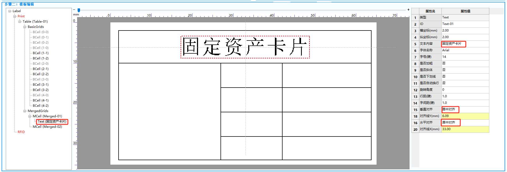
表格添加条码
鼠标右键选中某个单元格（BCell/MCell）->添加条码
在表格中添加条码，初始坐标为单元格左上角，条码宽高为该单元格的宽高，条码类型为code128，可根据实际打印需求修改条码属性参数，效果如下图：
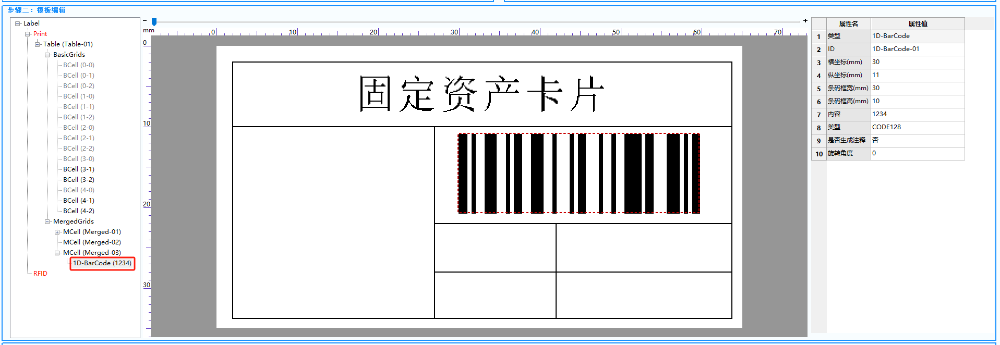
表格添加二维码
鼠标右键选中某个单元格（BCell/MCell）->添加二维码
在表格中添加二维码，初始坐标为单元格左上角，二维码宽高为该单元格的宽高，二维码容错等级为1，可根据实际打印需求修改二维码属性参数，效果如下图：
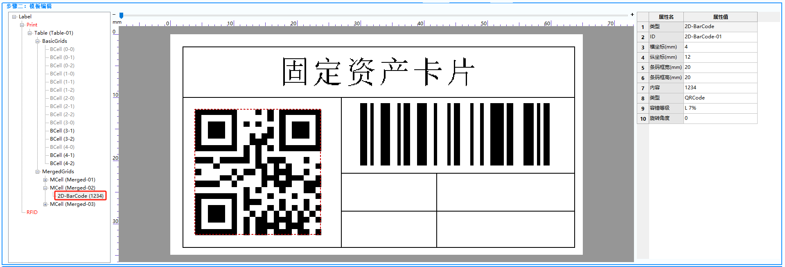
表格添加图片
鼠标右键选中某个单元格（BCell/MCell）->添加图片
在表格中添加图片，初始坐标为单元格左上角，图片宽高为该单元格的宽高，算法为阈值模式，可根据实际打印需求修改对应图片属性参数，效果如下图：
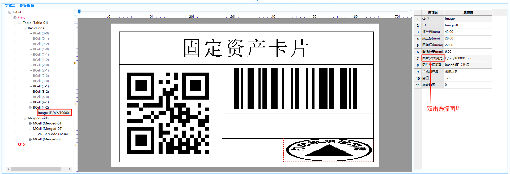
4.2.7、标签添加RFID
添加EPC
鼠标右键点击左侧标签模板导航栏中的“RFID”-添加EPC。
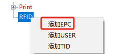
数据类型：有HexStr和ASCII两种
Epc数据写入规则：
①写入的epc数据一定要是2个字节的整数倍数长度，
ASCII类型，一个数占一个字节，所以用ASCII类型写入的数据长度需要是2的整数倍数长度。
示例：
ASCII：1234abcd，实际写入到标签芯片数据为：31 32 33 34 61 62 63 64（因为ASCII方式会转成ASCII码表对应的十六进制数据再写入）。
HexStr类型，2个数占一个字节，所以HexStr类型写入的数据长度需要是4的整数倍数长度。
示例：
HexStr：1234abcd，实际写入到标签芯片数据为：12 34 ab cd。
②epc长度不能超标签芯片规格，例如：标签芯片规格是96bits，那么epc只能写96/8=12字节，超出长度就写不进去；用HexStr能写24个数；ASCII方式只能写12个数。
③ASCII类型能写ASCII码表里面的任一字符数据，HexStr类型只能写0-9和字母a-f。
读写模式：WR、W、R三种；
WR，流程为：写epc-打印-读epc。
W，流程为：写epc-打印。
R，流程为：打印-只读epc。
EPC属性栏如下图：
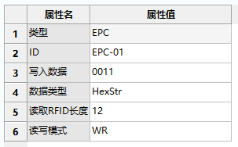
添加USER
鼠标右键点击左侧标签模板导航栏中的“RFID”-添加USER。
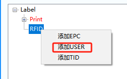
数据类型：有HexStr和ASCII两种
USER数据写入规则：
①写入的user数据一定要是2个字节的整数倍数长度，
ASCII类型，一个数占一个字节，所以用ASCII类型写入的数据长度需要是2的整数倍数长度。
示例：
ASCII：1234abcd，实际写入到标签芯片数据为：31 32 33 34 61 62 63 64（因为ASCII方式会转成ASCII码表对应的十六进制数据再写入）。
HexStr类型，2个数占一个字节，所以HexStr类型写入的数据长度需要是4的整数倍数长度。
示例：
HexStr：1234abcd，实际写入到标签芯片数据为：12 34 ab cd。
②user长度不能超标签芯片规格，例如：标签芯片规格是96bits，那么user只能写96/8=12字节，超出长度就写不进去；用HexStr能写24个数；ASCII方式只能写12个数。
③ASCII类型能写ASCII码表里面的任一字符数据，HexStr类型只能写0-9和字母a-f。
读写模式：WR、W、R三种；
WR，流程为：写USER-打印-读USER。
X，流程为：写USER-打印。
S，流程为：打印-只读USER。
USER属性栏如下图：
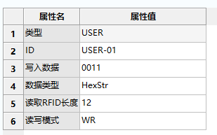
添加TID
鼠标右键点击左侧标签模板导航栏中的“RFID”-添加TID。
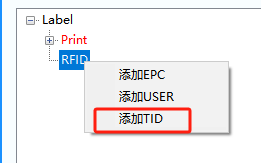
TID数据无法修改，读写模式只有R（只读）。
TID属性栏如下图：
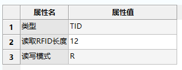
打印效果
4.2.8、保存模板
新建模板保存步骤：模板编辑好后->点击“模板另存为”->选择目标文件夹路径->命名模板名称-保存。
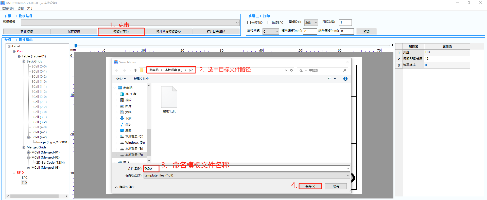
修改已有的模板保存步骤：模板修改后->点击“保存模板”保存
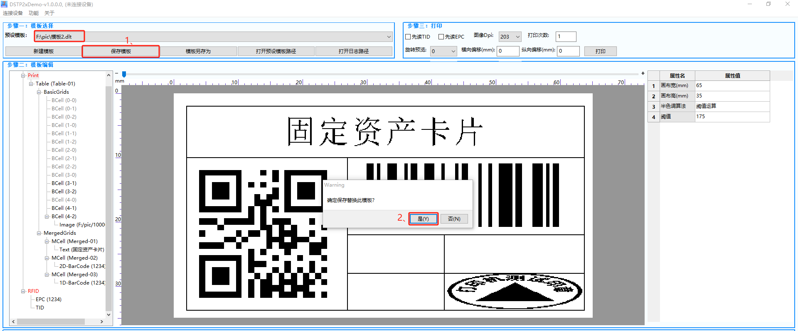
4.2.9、拖拉缩放模板预览图
当预览图中内容看不清或显示不全时，可对预览图进行缩放拖拉移动。
缩放：把鼠标放在要放大的内容上，滚动鼠标轮（或通过移动预览图上方的游标）可进行缩放。
拖拉：鼠标左键按住预览图，可进行拖拉进行上下左右移动。
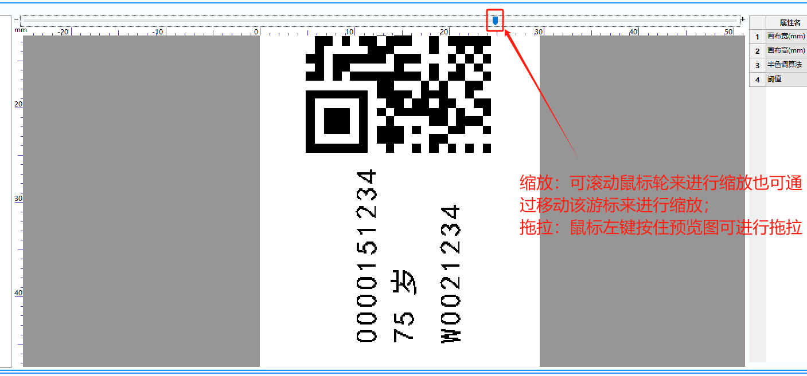
4.2.10、RFID标签锁定解锁
修改密码并锁定标签
具体流程：修改新密码-带密码写epc-锁标签-打印
设置：点击左侧导航栏RFID-“密码模式”改为“修改模式”，
修改密码：
输入原密码（通常为00000000）
设置新密码（不能为00000000）
如下图：
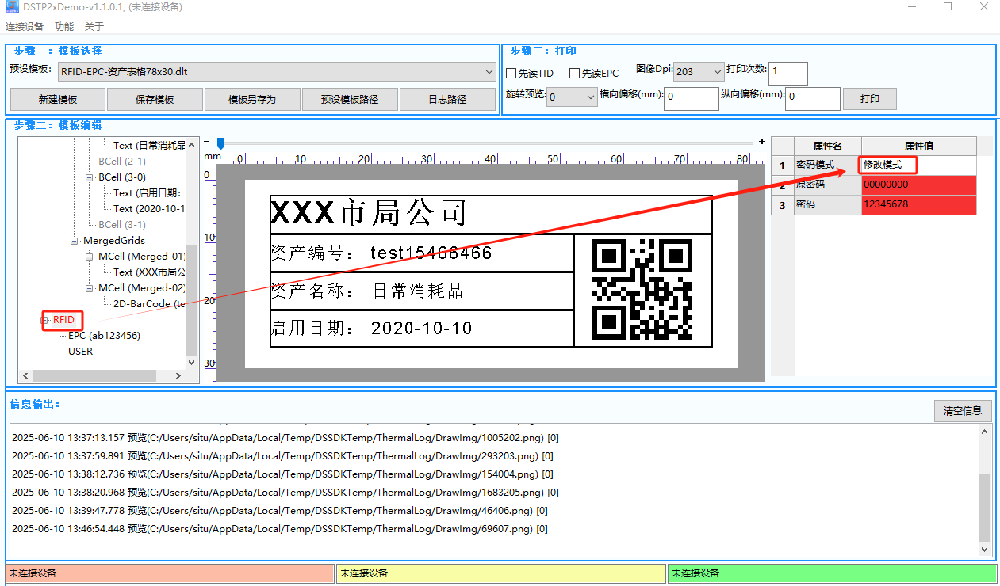
点击左侧导航栏EPC-“锁定动作”改为“锁定”，最后点击打印；如下图：
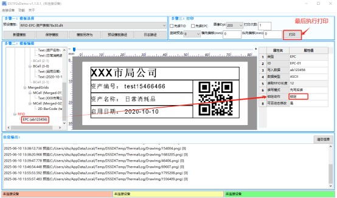
解锁并重写RFID标签
具体流程：解锁标签-带密码写epc-打印（适用于已锁定标签）
设置：点击左侧导航栏RFID-“密码模式”改为“修改模式”，“密码”栏输入标签正确密码，如下图：
可选：如需重新锁定标签，需集成的时候自行调用“锁定标签”接口即可。参考流程：解锁标签-带对密码写epc-锁定标签-打印。（适用于出厂已修改密码且锁定的标签，按需决定是否重新锁定。）
点击左侧导航栏EPC-“锁定动作”改为“解锁”，最后点击打印；如下图：
4.2.11、打开日志文件路径
如果使用“DSTP2xDemo.exe”中出现问题，且无法明确排查问题，麻烦提供对应日志文件给相关技术人员帮忙分析排查，直接点击“日志路径”按钮跳转到日志目录。